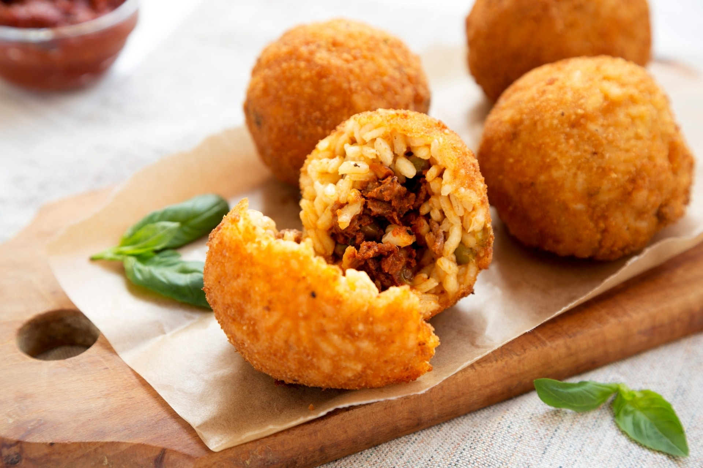

Arancini

Arancini are a famous Sicilian street food: golden, crispy rice balls
usually stuffed with ragù, peas, and mozzarella, then breaded and fried.
Their name comes from their resemblance to small oranges ("arance" in
Italian).
Ingredients
- 500 g risotto rice (e.g. Arborio)
- 1 onion, finely chopped
- 1 L chicken or vegetable broth
- 50 g butter
- 100 g grated Parmesan cheese
- 150 g mozzarella (cubed)
- 200 g ragù (meat sauce) with peas
- 2 eggs (one for rice, one for breading)
- Salt and pepper to taste
- Vegetable oil (for frying)
Directions
-
Cook the rice as a risotto: sauté the onion in butter, add the rice,
then gradually add broth until the rice is cooked. Stir in Parmesan and
1 beaten egg. Let cool completely.
-
Take a handful of rice, flatten it in your hand, place some ragù and
mozzarella in the center, then close with more rice, shaping into a ball
(or cone).
- Roll each ball in flour, then beaten egg, then breadcrumbs.
- Deep fry in hot oil until golden and crispy.
- Drain on paper towels and serve hot.
Home